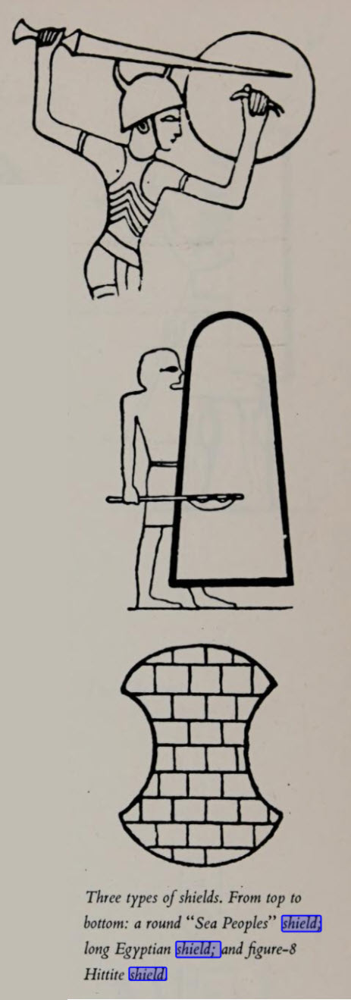
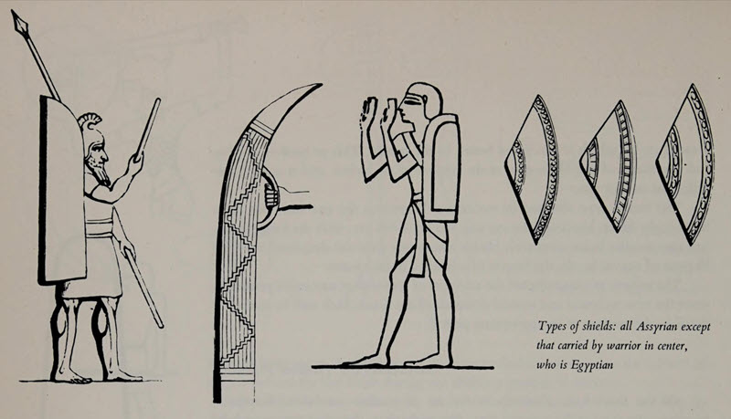
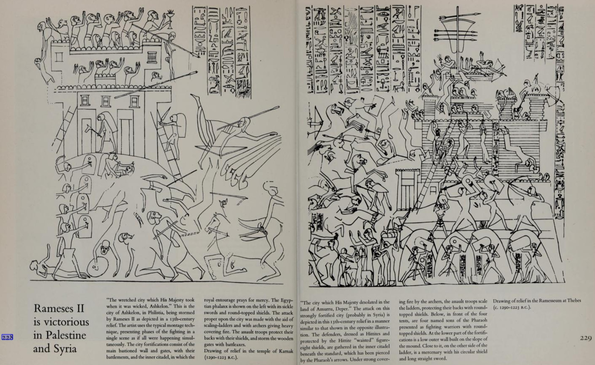

Many deities from many lands have been depicted holding a shield and/or described as offering protection, but we only have records of a handful of gods from the "Ancient Near East" that were described metaphorically as "a shield". The ANE king, as the representative of the god, was also described as a shield to his people.
The Hebrew Biblical Metaphor with special attention to Psalm Ps 3:4[3]
The metaphor of a shield is the focus of this study, a remarkably effective metaphor for illustrating the relationship of a god to his worshippers in terms of the basic aspects of their environment. The simple explanation of this is that the shield functioned as a concrete boundary between life and death in the hand-to-hand combat of ancient times. Few metaphors for a god compare with the ability of the "shield metaphor" to clarify the thought of one's own god as a determining existential boundary between man's capability to live and develop in security and the unknown destructive forces of the world around us.
It is obvious that the shield metaphor is a metaphor for protection, but it functions primarily as a religious relational metaphor. To live in a relationship with a god who is viewed as a "shield" is to live in a relationship to someone who is expected to guarantee one's own continued existence. When someone speaks to his god and says "my shield," a relationship has been established; an acceptance of a god's protection has been expressed and a dependency on this god has been confessed.
The fact that no two people are alike means that we never completely understand a metaphor in the same way. So a metaphorical expression is always an intensely personal meeting between the interpreter and the meaning of the metaphor. Because of this, the relation metaphors used to depict a person's deepest relationship to his god is one of the most deeply personal expressions in religious language to describe the presence of god. With this in mind, a study of the shield metaphor seems highly motivated.
-1999 Wiig, Promise, Protection, Prosperity, pp. 25-26
"One of the most absorbing chapters in the story of warfare is the search through the ages for devices which would offer personal security to the soldier on the battlefield without limiting his mobility or firepower. There was a constant struggle for priority among the three. A large and heavy shield could give excellent security — but at the expense of mobility. Protective devices for ears and eyes would hamper both mobility and the efficiency to direct fire. A shield which required to be held by one hand left only the other free to operate a weapon. And a coat of mail which freed both hands was unwieldy and slowed movement. In determining which of the three factors should be emphasized in the planning of a protective instrument, account was taken of the character of one’s own offensive weapons, those of the enemy, and of the forms of mobility available to both — chariots, cavalry, or infantry. The appropriate solution was sought by the appropriate adaptation of the shape of the protective device and the material from which it was to be made.
...
The shield is simply a device to serve as a barrier between the body of a soldier and the weapon of his enemy. For reasons we have already considered, no shield could be completely satisfactory. If it was large enough to give complete protection, it was too heavy to permit free movement. If it was small enough to give easy mobility, it was inadequate to offer the body full cover." p. 13

"The ancient armorers sought compromise solutions to these conflicting considerations, experimenting with different shapes, or different materials, or both. Their efforts are reflected in the numerous shapes of shields which have been found—long, short, rectangular, circular, triangular, shields shaped like a figure 8, flat shields, and convex shields. Each provides its own clue to the reasoning behind its design. The long shield served the soldier who fought without armor and needed maximum body protection. The short, usually round, shield was for the armored fighter who required protection for his face alone. The figure-8 shield was simply an economy form of the long shield, with superfluous parts cut out to save material and weight. The convex shield gave slightly more protection to the sides of the body, and was also designed to deflect arrows."The round shield, designed mainly to protect the uncovered face, did not come into use until the end of the 14th century, having been apparently introduced by the 'Sea Peoples.'" p. 65
"The shield underwent considerable changes during the period of the New Kingdom in Egypt — the Late Bronze period in the other lands of the Bible — for armor and the helmet were already in wide use. This prompted far-reaching modifications in the shape and size of the shield. It became smaller and smaller as the coat of mail and the helmet became more and more effective.
But there were differences in the types of shield used in Egypt, Palestine, Syria, and Anatolia and the shields of the Sea Peoples of the Egyptian armies during the XIXth Dynasty in the 13th century. The Egyptian shield throughout the period of the New Kingdom is comparatively small. Its top is rounded and is slightly wider than its base, which is straight. This suggests that it was designed primarily to protect the face and the upper part of the body. This shape remains virtually unchanged, with only minor modifications throughout the New Kingdom.
The shields were made of wood and covered with leather (202-203). In the 13th century, the top part of the shield protecting the face is strengthened with a metal disk. The loop or strap could be lengthened to enable the shield to be carried on the back. This was very practical in operations against a fortified city (228), both in scaling the ladders and breaching the gate.
The light circular shield was used in the Egyptian army exclusively by the Sea Peoples (229). These troops were well armored; their basic weapons were the long sword and spear. This shield was particularly well suited to hand-to-hand combat, and did not encumber movement." p. 83
"The Canaanite shields depicted in the reliefs of Seti I (231) and Rameses II (where the Canaanites are fighting together with the Hittites) are also oblong. But we find a radical change beginning with the 13th century when both the round and the rectangular shields appear on the battlefield. We find the round shield in the hands not only of a warrior from the city of Ashkelon (228) but also of the fighters depicted in the Megiddo reliefs. In the Megiddo illustrations, some are shown equipped with a sickle sword and carrying a round shield on their back (206-207), some carry an axe and a round shield (242), and some a spear and a similar shield (243). There is no doubt that this shield was introduced into the Canaanite armies under the influence of the Sea Peoples who made their appearance in this part of the world precisely at this time.
The Hittite shield was quite different from all the others, and is well illustrated in the Rameses relief of the Battle of Kadesh (see figure on page 88). It is shaped like a rough figure 8, round and wide at the top and bottom and narrow at the waist, broadly following the lines of the human body. The Hittite chariots were used for short-range combat, and this perhaps explains the form of their shield. For it gave protection to the whole body, yet was reasonably light by virtue of its narrowness at the center.
The coat of mail is the outcome of the advancement of the bow and the chariot to extensive use. The charioteer and the archer were the only warriors who required both hands to operate their battle instruments, and so lacked the means of protecting their body with a shield. At the beginning, the archer, even wielding the simple bow, was in large measure protected by distance, since he was out of range of enemy missiles. But with the development and wider use of the composite bow, this military advantage was neutralized. It was of course possible to solve the problem for the archer and the charioteer by means of the special shield-bearer. And this method was indeed adopted in later periods. For the chariot it meant the addition of a third man—-driver, archer, plus bearer—-which put a heavy strain on the light vehicle. Despite this, the system was prevalent among the Hittites. But the search for the ideal solution persisted. It was found in the coat of mail, with its metal scales, hard, reasonably light, and flexible. It was expensive, and not all armies could afford it. Even large armies could not afford to armor all the men in every unit. They laid down priorities. Top of the priority list were the archers and the charioteers." p. 84
"The most usual method of attack on a city was penetration above the walls, using scaling-ladders. This system is well illustrated in the reliefs (228, 229). Under heavy covering fire from the archers, the assault troops would rush to scale the walls and try to reach the top. The Egyptian shield, with the shoulder-strap attached to its inner surface, was particularly suited to this task. For the attacking soldier could hang it over his back (228), and this left his hands free for the climb and the fighting.
A second method, which paralleled the first, was penetration through the city gates. The assault troops would storm the gate, their backs protected by shields, and, armed with axes (228), they would try and tear down the bolts and hinges." p. 97

